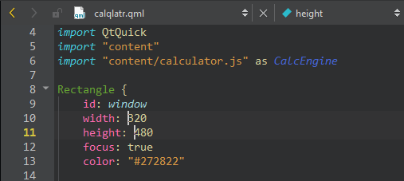

Insert multiple cursors
To apply a change to several places simultaneously in the editor in the Edit mode, select and hold Alt, and click to place cursors in several places in the file. Any changes you make are applied simultaneously at all the cursor positions.

To manage cursors:
- Select the arrow keys to move all the cursors up and down.
- Select the Home and End key to move all the cursors to the beginning or to the end of the line.
- Select and hold Alt and double-click strings to select several strings simultaneously.
- Select Alt+Shift+I to create cursors at the ends of selected lines.
- Select Esc to remove all the cursors and selections.
See also How To: Edit Code, Editing Selected Lines, and Edit Mode.